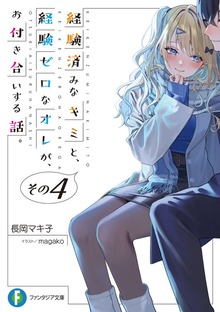
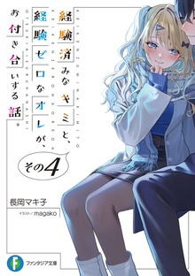

Synopsis:
A love story that's sure to make you feel wonderful when you read it.
"I-I love you!"
"What? You mean Susuki?" -> (Wordplay : Suki means love and she answer 'Susuki?' a name, misunderstanding caused by MC stammering)
Introverted high schooler
Kashima Ryuuto is forced to confess his feelings to Shirakawa Luna the girl at the top of the school hierarchy and the one he admires,
as a punishment game.The two end up dating for the unexpected reason, "Well, I'm single right now," but Ryuuto follows Luna as she is
confessed by a handsome soccer club member and eavesdrops, while Luna brings up Ryuuto, who she just started dating, into her room as if
it were the most natural thing in the world. The two are completely different in everything, from the friends they hang out with to the
things they do for fun, but they are surprised by the gap between them every day, and they begin to accept each other and connect with each
other. A love story that will surely make you feel wonderful as you read it begins!
Genres: Romance, comedy, slice of life, drama
Short review:
The story centers on two polar-opposite high schoolers who end up dating:
Kashima Ryuuto: A gloomy, introverted,
inexperienced "陰キャ" (in-kya / introvert, loner type) guy who has zero romantic/sexual experience. He crushes hard on the popular
girl but never expected anything to happen.
Shirakawa Runa: A stunning, outgoing, ultra-popular "陽キャ" (you-kya / extrovert)
who is already very "experienced" in relationships and intimacy.
Their relationship starts from a punishment-game forced confession that she surprisingly accepts ("I'm free right now anyway").
What follows is a sweet, awkward, sometimes steamy, and very realistic portrayal of two people from completely different worlds slowly
bridging the gap through dates, misunderstandings, jealousy, growth, and genuine affection. The series is famous for tackling the
"experienced girl x virgin boy" dynamic head-on without heavy judgment, focusing instead on mutual understanding, communication, and
emotional intimacy.
Later volumes fast-forward time: after high school graduation, we see them as university students and working adults, dealing with long-distance
elements, career pressures, adult life milestones, and deeper commitment questions — making it feel more mature than typical high-school
rom-com LNs.
Relatable & refreshing character dynamics — The contrast between the leads drives most of the charm. Ryūto's insecurity and overthinking pair
beautifully with Runa's straightforward (sometimes blunt) affection. Their growth feels earned.
Balanced tone — Mixes comedy, fluff, heartwarming moments, light drama, and occasional ecchi/steamy scenes without being overly explicit.
It's more "realistic teen/young adult romance" than exaggerated wish-fulfillment.
Strong side cast — Friends, rivals, and family add depth and prevent it from being purely couple-focused.
Time-skip maturity — Volumes 6+ shifting to university/working life give it staying power and emotional weight many high-school rom-coms lack.
Art & presentation — magako's illustrations are very attractive (especially the covers and color pages), capturing the gal aesthetic and emotional expressions perfectly.
Pacing in mid-late volumes — Some readers feel the story stretches a bit after the initial high-school arc, with more
slice-of-life and relationship maintenance than big events.
Controversial elements — The premise (experienced vs. inexperienced) and frank discussions of sex/relationships rub
some readers the wrong way, especially if they dislike "non-virgin heroine" tropes or feel the story handles certain
topics too casually.
Not groundbreaking plot — It's character-driven rather than plot-heavy; if you want heavy drama, twists, or action,
this isn't it.
Ending reception — The final volume (Vol. 10, March 2025) wraps things up satisfyingly for most fans with a big emotional
payoff, but a minority felt certain side threads or emotional beats could have been deeper.
Rating vibe: 9.7/10 for fans of the genre; I've only read the first two volumes so far, but it's been a really pleasant
experience. There are enough events and developments to hold your attention and keep pushing you to continue reading to see
how things resolve.
More details on reading in japanese:
It's a very easy read. The combination of slice-of-life, and romance make it easier.
I didn't encounter any particular hardship reading it. But since the heroine is a 'gal', she uses a different vocabulary
than normal, can cause difficulty to comprehend her if you aren't familiar with it.
Detailed section on how to learn and read in japanese

 
